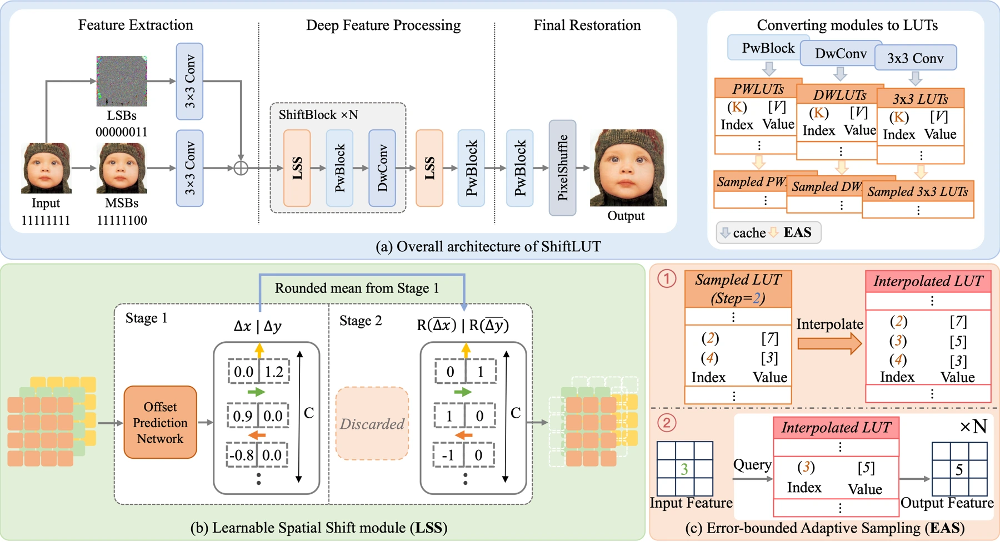
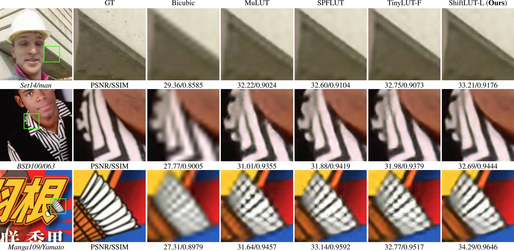

Look-up tables offer an efficient route to image restoration. However, expanding the area each prediction can use often increases computation and storage, making deployment on constrained devices harder.
查找表为图像恢复提供了一条高效路径，但扩大每次预测可利用的区域，通常会增加计算量和存储开销，使资源受限设备上的部署更加困难。
ShiftLUT revisits where that cost comes from. Instead of asking a larger table to encode every spatial combination, it changes how features are brought together before lookup.
ShiftLUT 重新考察这一成本的来源：不让更大的表编码所有空间组合，而是改变查表之前特征汇聚的方式。
Moving context instead of enlarging tables移动上下文而非扩大查找表
ShiftLUT uses learnable, channel-wise spatial shifts to enlarge the receptive field. An asymmetric two-branch architecture directs more computation toward the branch carrying denser information. Error-bounded adaptive sampling then compresses the feature-level tables to reduce storage.
ShiftLUT 通过可学习的逐通道空间位移扩大感受野；非对称双分支结构将更多计算分配给信息更密集的分支；具有误差界的自适应采样进一步压缩特征级查找表，降低存储需求。
A pointwise lookup table is cheap partly because it sees little spatial context. Learnable shifts let information from different positions reach different channels before the lookup-style processing. The asymmetric branches avoid spending equal computation on representations that contain unequal amounts of useful information. Adaptive sampling addresses a separate bottleneck: it stores the table more economically while bounding the interpolation error, so efficiency is considered at both computation and representation levels.
逐点查找表成本低，部分原因是它看到的空间上下文有限。可学习位移让不同位置的信息先进入不同通道，再进行查找表式处理。非对称分支避免在有效信息量不同的表征上投入相同计算；自适应采样则在约束插值误差的同时压缩表格，从计算与表示两方面考虑效率。
{kind=link}

Accounting for quality, storage and computation同时衡量质量、存储与计算
The evaluation includes 4× super-resolution, denoising and JPEG deblocking. Standard SR datasets measure luminance-channel PSNR and SSIM, while an Android implementation measures runtime on a Snapdragon 888 at a 320×180 input size. Small, medium and large variants expose the storage–quality trade-off. The design is also tested beyond upscaling by removing the final spatial enlargement stage.
评测覆盖 4× 超分辨率、去噪和 JPEG 去块。标准 SR 数据集使用亮度通道 PSNR、SSIM；Android 实现则在骁龙 888、320×180 输入条件下测量耗时。小、中、大模型展示存储与质量的取舍，移除末端空间放大阶段后还可用于去噪和去块。
A wider view at a practical cost以可控成本获得更大视野
Compared with TinyLUT, the paper reports a 3.8-times larger receptive field and an average PSNR improvement exceeding 0.21 dB across multiple standard benchmarks, while retaining low storage and inference costs. The contribution combines spatial coverage, computation allocation, and table compression. The linked implementation provides a starting point for examining this balance under a particular deployment budget.
与 TinyLUT 相比，论文报告的感受野扩大至 3.8 倍，在多个标准基准上的平均 PSNR 提升超过 0.21 dB，同时保持较低的存储与推理成本。该设计综合考虑空间覆盖、计算分配和表压缩，代码可用于进一步评估具体部署预算下的权衡。
{kind=link}

Designing for the deployment budget面向部署预算进行设计
The model family matters as much as a single best score. On Manga109, ShiftLUT-L improves over TinyLUT-F from 28.83 to 29.16 dB, while reported storage falls from 171 to 104 KB and runtime from 146 to 84 ms. Those measurements make the deployment case concrete, but the phone, input resolution and degradation model define the scope of that efficiency claim.
模型系列的取舍与单一最高分同样重要。在 Manga109 上，ShiftLUT-L 相比 TinyLUT-F 从 28.83 提升到 29.16 dB，报告的存储从 171 降到 104 KB，耗时从 146 降到 84 ms。这些数据使部署价值更具体，但效率结论仍限定于对应手机、输入分辨率与退化模型。
Paper & authors论文与作者
ShiftLUT: Spatial Shift Enhanced Look-Up Tables for Efficient Image Restoration ↗
Cite this work
@misc{zeng2026shiftlutspatialshiftenhanced,
title = {ShiftLUT: Spatial Shift Enhanced Look-Up Tables for Efficient Image Restoration},
author = {Xiaolong Zeng
and Yitong Yu
and Shiyao Xiong
and Jinhua Hao
and Ming Sun
and Chao Zhou
and Bin Wang},
year = {2026},
eprint = {2603.00906},
archivePrefix = {arXiv},
primaryClass = {cs.CV},
url = {https://arxiv.org/abs/2603.00906}
}